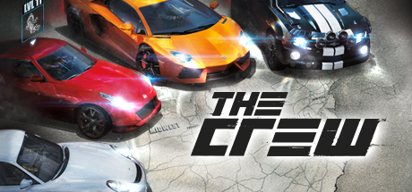

The Crew

PLATFORMY
PC
PS3
X360
XOne

Wiecej Zdj.
Sandboksowa gra wyścigowa wyprodukowana przez studio Ivory Tower przy współpracy z Ubisoft Reflections. The Crew to propozycja skierowana przede wszystkim do miłośników widowiskowej jazdy wirtualnymi samochodami.
The Crew to gra samochodowa z pełni otwartym światem, pozwalająca graczowi na rywalizację z innymi kierowcami na obszarze USA. Tytuł wyprodukowany został przez francuskie studio Ivory Tower, założone przez byłych pracowników Eden Games (odpowiedzialnych za serię Test Drive Unlimited) przy wsparciu ekipy deweloperskiej Ubisoft Reflections. Jak przystało na rasową „ścigałkę”, gracze mają okazję wcielić się w role kierowców samochodów i spróbować swoich sił w emocjonujących wyścigach ulicami amerykańskich miast.
Twórcy dali nam dość szeroki asortyment aut, ale głównie pod względem ich przerobionych wersji, podzielonych na pięć różnorodnych kategorii. Unikalnych modeli jest w sumie około pięćdziesięciu. Ambicją twórców było - zgodnie z hasłem reklamowym gry - by „gracze nigdy nie ścigali się sami”. Stąd duży nacisk na obecność rozbudowanych funkcji społecznościowych, pozwalających na płynne przechodzenie pomiędzy trybem jedno- i wieloosobowym.
The Crew oferuje szereg wariantów rozgrywki przewidzianych m.in. do rywalizacji indywidualnej oraz drużynowej ze znajomymi, bądź losowo dobranymi graczami. Jedną z najważniejszych cech gry jest otwarty świat - twórcy zaoferowali nam blisko 5000 mil kwadratowych terenu zlokalizowanego w USA, przeznaczonego do pełnej eksploracji i wypełnionego różnorodnymi atrakcjami: czekają na nas setki misji, wyścigów i zadań. Elementem składowym tej produkcji jest również kampania fabularna oferująca około 10 godzin rozgrywki – w jej trakcie nasz bohater przemierzy całe Stany Zjednoczone, biorąc udział w licznych misjach związanych bezpośrednio z fabułą. Jednym z elementów gry jest rozbudowany system modyfikowania samochodów. Gracze mogą wprowadzać szereg zmian nie tylko w wyglądzie nadwozia, ale także w parametrach technicznych, zapewniając pojazdowi coraz lepsze osiągi, niezbędne do dalszej rywalizacji w grze. Pomimo typowo zręcznościowej rozgrywki - twórcy postarali się o zróżnicowany model jazdy dla każdej kategorii pojazdu oraz o przystępny sposób prowadzenia dla początkujących graczy.
WYMAGANIA
Minimalne:
Intel Core 2 Quad 2.5 GHz/AMD Athlon II X4 2.6 GHz, 4 GB RAM, karta grafiki 512 MB GeForce GTX 260/ Radeon HD 4870 lub lepsza, 18 GB HDD, Windows 7(SP1)/8/8.1 64-bit
Rekomendowane:
Intel Core i5 2.6 GHz/AMD Phenom II X4 3.0 GHz, 8 GB RAM, karta grafiki 1 GB GeForce GTX 580/Radeon HD 6870 lub lepsza, 18 GB HDD, Windows 7/8/8.1 64-bit
Intel Core i5 2.6 GHz/AMD Phenom II X4 3.0 GHz, 8 GB RAM, karta grafiki 1 GB GeForce GTX 580/Radeon HD 6870 lub lepsza, 18 GB HDD, Windows 7/8/8.1 64-bit
Minimalne:
Intel Core 2 Quad 2.5 GHz/AMD Athlon II X4 2.6 GHz, 4 GB RAM, karta grafiki 512 MB GeForce GTX 260/ Radeon HD 4870 lub lepsza, 18 GB HDD, Windows 7(SP1)/8/8.1 64-bit
PEGI


Język Gry

PL napisy, EN napisy i dialogi